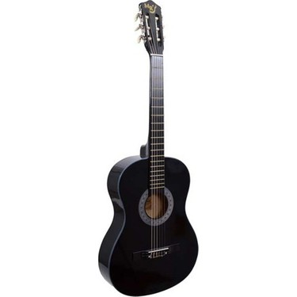

GİTAR
Gitar, genellikle altı telli, ses perdeli müzik aletidir..

DAVUL
Davul, bilinen en eski vurmalı çalgılardan biridir..
Bas Davul
Bas davul, en büyük davuldur. Bas davulun çapı çok geniştir. İçi boş silindir biçiminde, tahtadan bir gövdesi vardır..
300 TLPİYANO
küçük çekiçlerle tellerine vurulunca ses veren, klavyeli, ağır ve büyük bir çalgı..

GİTAR
Gitar, genellikle altı telli, ses perdeli müzik aletidir..
DAVUL
Davul, bilinen en eski vurmalı çalgılardan biridir..
Bas Davul
Bas davul, en büyük davuldur. Bas davulun çapı çok geniştir. İçi boş silindir biçiminde, tahtadan bir gövdesi vardır..
300 TLGİTAR
Gitar, genellikle altı telli, ses perdeli müzik aletidir..